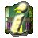

Управление
Удобное управление платформой - один из залогов победы над врагами. Поэтому важно настроить "приборную панель своего танка" максимально удобной. Для этого и существует раздел настроек "Управление". Для каждого из четырёх игроков имеется свой набор установок. Для того, чтобы настроить управление определённого игрока нажмите соответствующую кнопку. Появится дополнительное окно с настройками, где Вы можете выбрать три основных вида управления:
Клавиатура. Самое стандартное средство управления. Тут же вам необходимо выбрать клавиши для всех функций танка. При этом функция "Поворот" поворачивает танк вокруг собственной оси, а двигать его нужно клавишами "Вперёд" и "Назад".
Клавиатура (классическое). Интересный способ управления с клавиатуры основанный на простейших аркадных играх (почти как в "Battle City"). Теперь "Поворот влево" разворачивает танк строго по направлению на запад и двигается. Аналогично, "Вперёд", поворачивает танк на север и двигается. Чтобы двигаться по диагонали нужно нажать одновременно нужные клавиши.
Мышь. Управление производится только мышкой. При нажатии правой кнопки мыши танк двигается по направлению к курсору. Левая кнопка - огонь, средняя - подобрать оружие, колесом можно вращать башню.
Мышь (альтернативное). Все кнопки управления аналогичны стандартным мышиным, однако башня танка наводится курсором. При этом точность стрельбы неплохо возрастает, однако манёвренность требует недюженной сноровки.
Смешанное. Проверенный многими играми метод управления клавиатурой и мышью одновременно. Клавиатура отвечает за перемещение платформы. При этом используются стандартные клавиши управления, которые можно изменить. Мышью нужно наводить башню танка, левая кнопка - выстрел, правая - подбор предмета.
|  | Смешанное управление представляет собой баланс точности и манёвренности. Главное научится точно наводить башню, так как она вращается медленно и сбивается при поворотах платформы. |
Сложность AI
AI - это искусственный интеллект. От его сложности зависит мастерство компьютерных ботов во время игры. Компьютер - это не человек, и наделить его разумом сходным с нашим весьма сложно. Поэтому бывает, что боты "тупят" - принимают нерациональные решения. Зато компьютер, в отличие от человека, может просчитать ситуацию на много ходов вперёд. Именно это позволяет настраивать опция "Сложности AI".